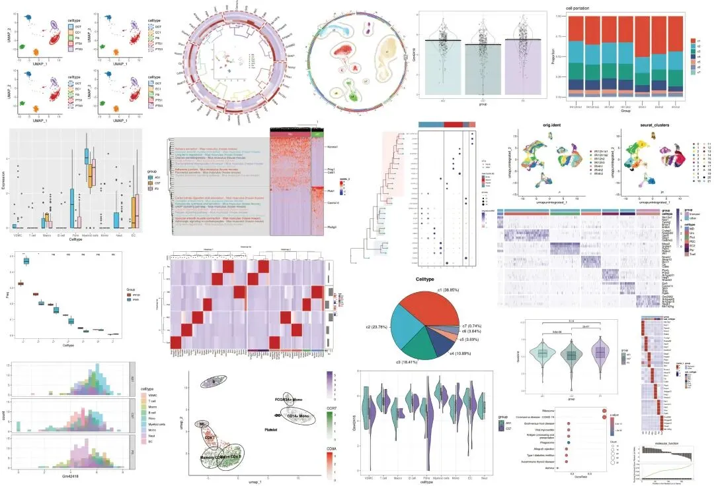
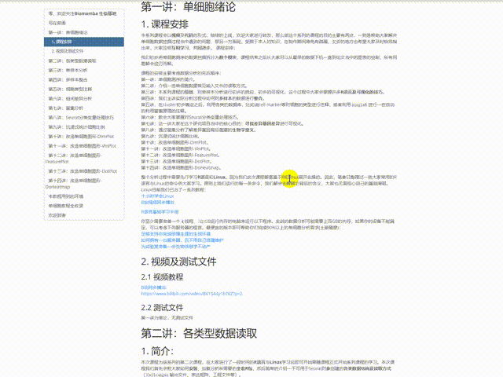
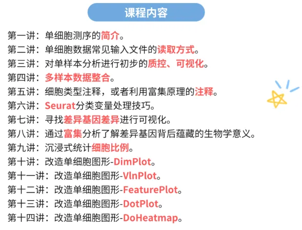

scRNA-seq数据基础分析手册(2025最新修订)
原文：https://mp.weixin.qq.com/s?__biz=MzAwMzIzOTk5OQ==&mid=2247528199&idx=1&sn=ab75e7d7987ab233c675455188f10f33&chksm=9b3c1657ac4b9f41e312a5f508fa1fb2158dfdbaacfb2d67c3ffa3d134b0c6b5672c062499da#rd 合集：单细胞教程全收录

scRNA-seq数据基础分析手册

 离我们最开始做单细胞教程已经过去四五年，现在已经收获了40w+的阅读量。一共940min的教程相信足够大家完成单细胞的学习与文章发表，我们也陆陆续续收到小伙伴们的发文致谢：致谢合辑。
离我们最开始做单细胞教程已经过去四五年，现在已经收获了40w+的阅读量。一共940min的教程相信足够大家完成单细胞的学习与文章发表，我们也陆陆续续收到小伙伴们的发文致谢：致谢合辑。 一方面随着时间飞逝，原先教学中的一些内容已然过时，毕竟我们最初的演示是基于Seurat V3，而现在V5上线都已经快两年了。另一方面很多同学由于缺少编程、单细胞、文章套路等基本知识，跟着视频并不能完全自学掌握单细胞分析技能。因此，基于最新的R环境与Seurat版本，我们重新组织、修订了《手把手教你做单细胞测序数据分析》学习手册资料。参与我们手把手教你做scRNA-seq数据基础分析的小伙伴无需重复订阅，开课时会自动发放。其他小伙伴也可以联系客服微信[Biomamba_yunying]优惠订阅/报名~建议大家学习此教程前先行掌握：5.5h入门R语言。
教程图片集锦：
一方面随着时间飞逝，原先教学中的一些内容已然过时，毕竟我们最初的演示是基于Seurat V3，而现在V5上线都已经快两年了。另一方面很多同学由于缺少编程、单细胞、文章套路等基本知识，跟着视频并不能完全自学掌握单细胞分析技能。因此，基于最新的R环境与Seurat版本，我们重新组织、修订了《手把手教你做单细胞测序数据分析》学习手册资料。参与我们手把手教你做scRNA-seq数据基础分析的小伙伴无需重复订阅，开课时会自动发放。其他小伙伴也可以联系客服微信[Biomamba_yunying]优惠订阅/报名~建议大家学习此教程前先行掌握：5.5h入门R语言。
教程图片集锦：

本教程基于Linux中的Rstudio环境演示，计算资源不足的同学可参考： 足够支持你完成硕博生涯的生信环境 独享服务器，生信分析不求人
学习资料，所见即所得
同我们以前的资料一样，我们给大家准备了学习手册和学习资料，可以在文末订阅获取：

共包含十四讲内容：

目录大纲：

测试文件，总大小5.1GB：
├── GSE139107
│ ├── GSE139107_MouseIRI_12hours.dge.txt.gz
│ ├── GSE139107_MouseIRI_14days.dge.txt.gz
│ ├── GSE139107_MouseIRI_2days.dge.txt.gz
│ ├── GSE139107_MouseIRI_4hours.dge.txt.gz
│ ├── GSE139107_MouseIRI_6weeks.dge.txt.gz
│ └── GSE139107_MouseIRI_control.dge.txt.gz
├── GSE139107_MouseIRI.metadata.txt.gz
├── MonacoImmuneData.rds
├── bcell.marker.CSV
├── cg.rds
├── color.Rdata
├── data.txt
├── filtered_gene_bc_matrices
│ └── hg19
│ ├── barcodes.tsv
│ ├── genes.tsv
│ └── matrix.mtx
├── iri.intergrate.harmony.rds
├── iri.intergrate.harmony.rename.rds
├── iri.intergrate.havebatch.rds
├── iri.intergrate.havebatch.v5CCA.rds
├── iri.intergrate.rds
├── iri.obj4.rds
├── iri.obj5.rds
├── my.pbmc.tar.gz
├── mycount.txt
├── panc8.rds
├── pbmcrenamed.rds
└── single_cell_datamatrix.txt
3 directories, 27 files
往期订阅
生信基地现已开放终身订阅，现已包含几十篇订阅资料，未来37年持续更新：那就开放一个终身订阅吧~
2025已更新订阅内容：
《Cell》复现|中性粒细胞scRNA-seq图谱阐明抗肿瘤抗原呈递效力
《Cancer Cell》|时空单细胞揭示CRC的PD-1治疗免疫细胞动态
解锁前需阅读：2025订阅须知
**
**
订阅后获取学习手册下载链接：